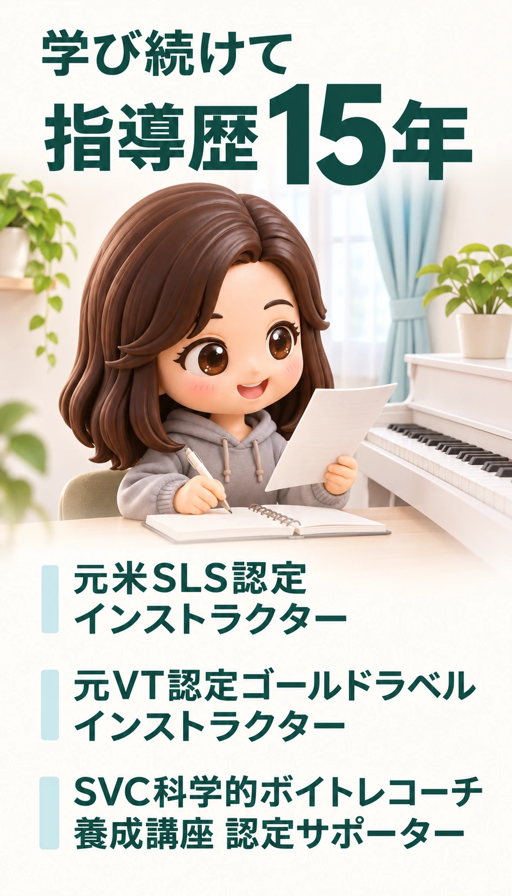
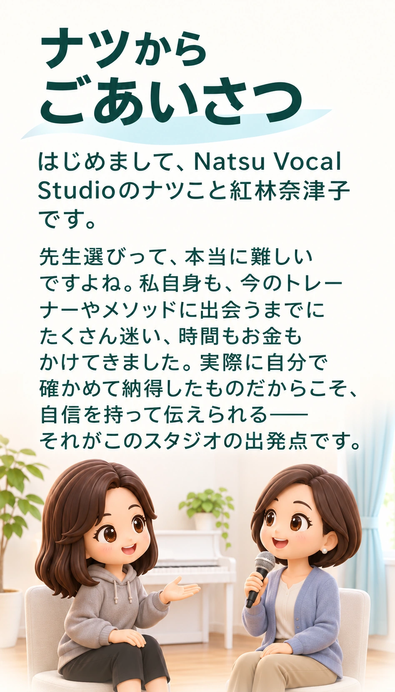
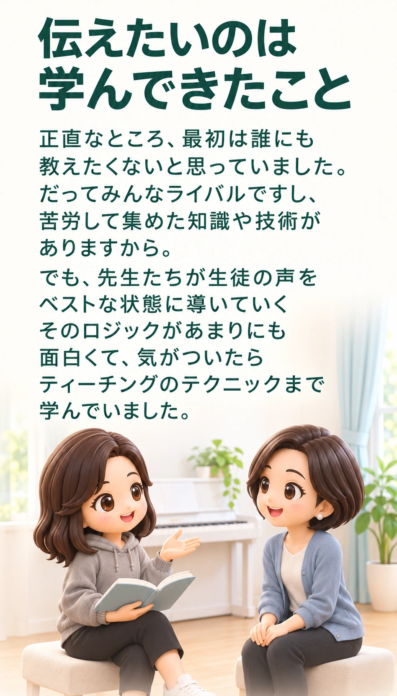
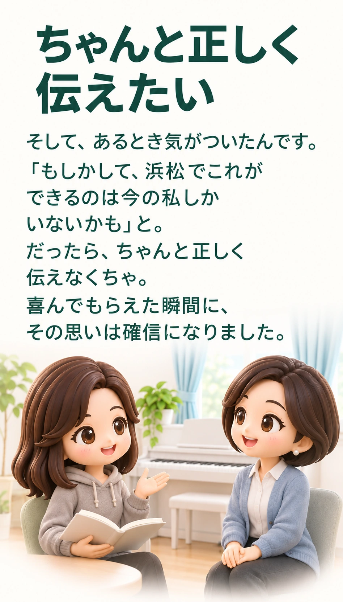
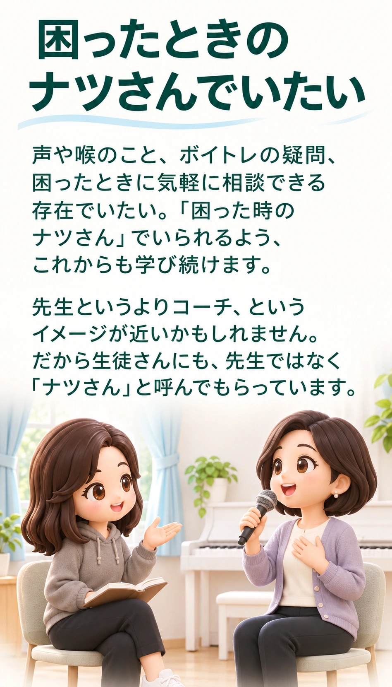

学び続けて 指導歴15年
- 元米SLS認定
インストラクター - 元VT認定ゴールドラベル
インストラクター - SVC科学的ボイトレコーチ
養成講座 認定サポーター
ナツから ごあいさつ
はじめまして、Natsu Vocal Studioのナツこと紅林奈津子です。
先生選びって、本当に難しいですよね。私自身も、今のトレーナーやメソッドに出会うまでにたくさん迷い、時間もお金もかけてきました。実際に自分で確かめて納得したものだからこそ、自信を持って伝えられる——それがこのスタジオの出発点です。
伝えたいのは
学んできたこと
正直なところ、最初は誰にも教えたくないと思っていました。だってみんなライバルですし、苦労して集めた知識や技術がありますから。でも、先生たちが生徒の声をベストな状態に導いていくそのロジックがあまりにも面白くて、気がついたらティーチングのテクニックまで学んでいました。
ちゃんと正しく
伝えたい
そして、あるとき気がついたんです。「もしかして、浜松でこれができるのは今の私しかいないかも」と。だったら、ちゃんと正しく伝えなくちゃ。喜んでもらえた瞬間に、その思いは確信になりました。
困ったときの
ナツさんでいたい
声や喉のこと、ボイトレの疑問、困ったときに気軽に相談できる存在でいたい。「困った時のナツさん」でいられるよう、これからも学び続けます。
先生というよりコーチ、というイメージが近いかもしれません。だから生徒さんにも、先生ではなく「ナツさん」と呼んでもらっています。
プロフィール・学びの背景を読む
紅林 奈津子 / ナツ
静岡県菊川市生まれ
Natsu Vocal Studio主宰
幼少期から日本舞踊を学び、ショーの構成・演出・振付・指導、バンド活動、ライブやレコーディングを経験。その後、Speech Level Singingに出会い、発声と指導の学びを続けてきました。
これまでに学んだトレーナー
桜田ヒロキ / 安倉さやか / Spencer Welch / Greg Enriquez / 川野淳






プロフィール・学びの背景を読む
紅林 奈津子 / ナツ
静岡県菊川市生まれ
Natsu Vocal Studio主宰
幼少期から日本舞踊を学び、ショーの構成・演出・振付・指導、バンド活動、ライブやレコーディングを経験。その後、Speech Level Singingに出会い、発声と指導の学びを続けてきました。
これまでに学んだトレーナー
桜田ヒロキ / 安倉さやか / Spencer Welch / Greg Enriquez / 川野淳